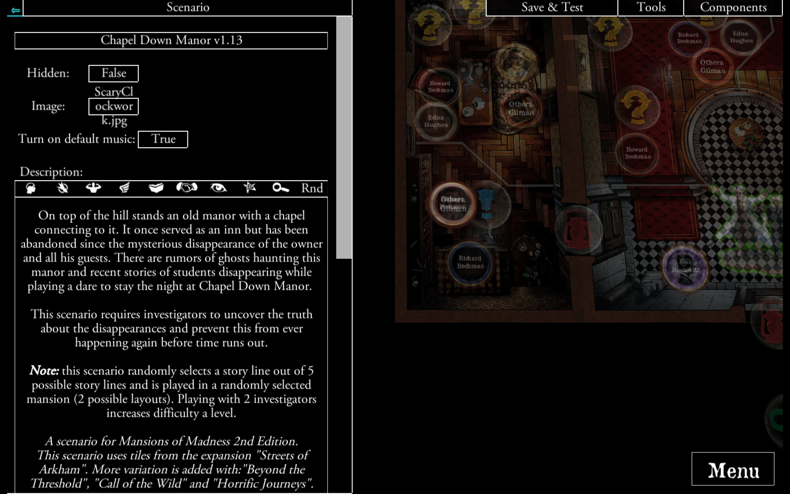
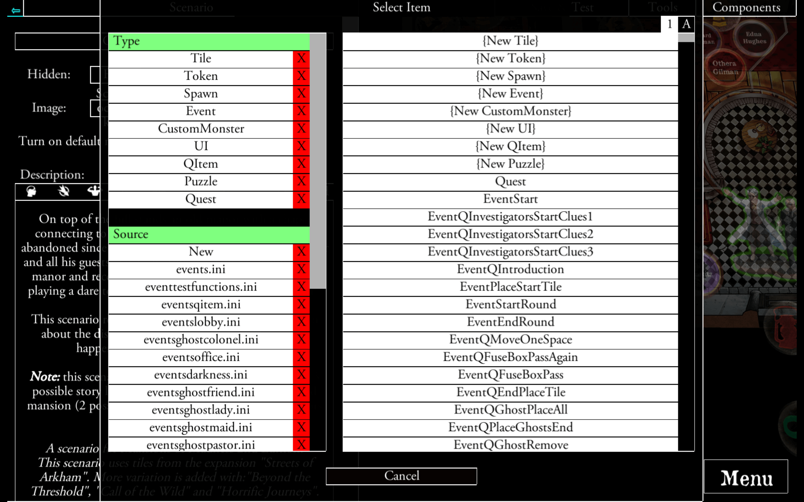
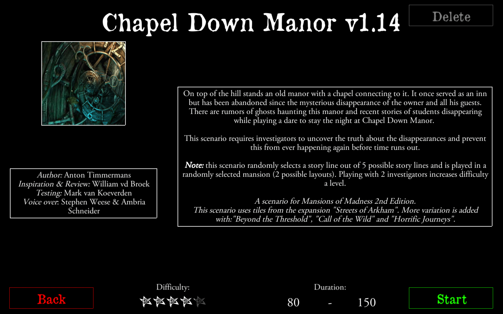
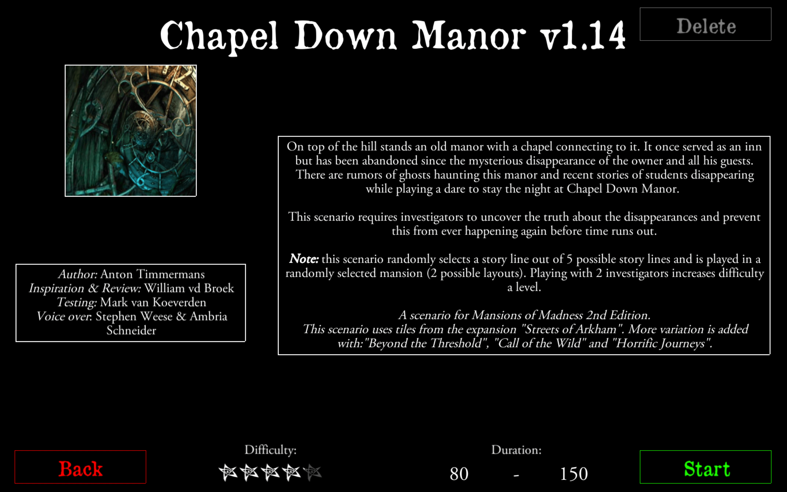

OPIS
Valkyrie została stworzona przez użytkowników, którzy chcieli tworzyć własne przygody, którymi mogliby dzielić się z innymi graczami.
Tworzenie własnej przygody
Zostań Mistrzem Gry i rozpocznij tworzenie własnych przygód.
Edytor Scenariusza
Używaj Edytora Scenariuszy żeby rozmieszczać według własnego uznania żetony oraz kafle terenu.


Sterowanie Wydarzeniami
Twórz wydarzenia połączone z żetonami, kaflami terenu oraz bohaterami.
Podziel się swoim dziełem.
Po zakończeniu pracy w edytorze możesz podzielić się efektami swojej pracy z innymi graczami na całym świecie.
 

Wypróbuj Scenariusz
Możesz zagrać w stworzony przez siebie scenariusz lub zagrać w dzieła innych graczy.
Wybór Języka
Scenariusze są dostępne w różnych językach. Społeczność jest międzynarodowa i zajmuje się ich tłumaczeniem.
Zostaw Opinię
Po zakończeniu scenariusza gracze są proszeni o napisanie swojej opinii o scenariuszu. Daje to cenne informacje zwrotne dla twórcy.